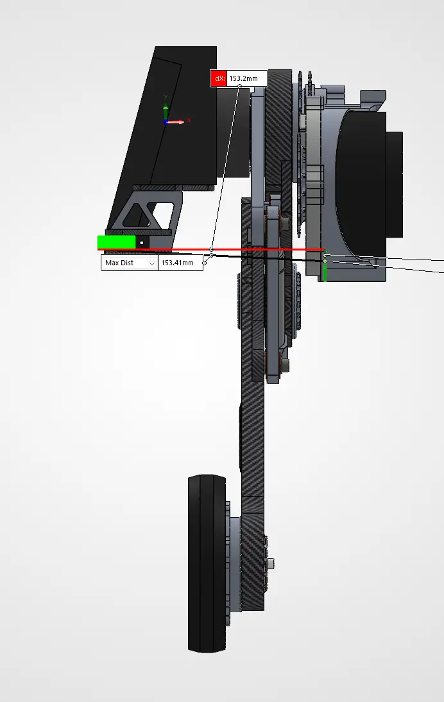
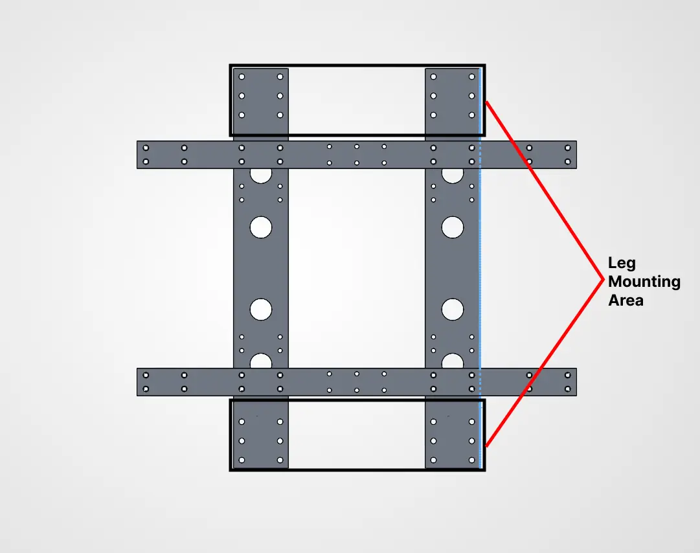
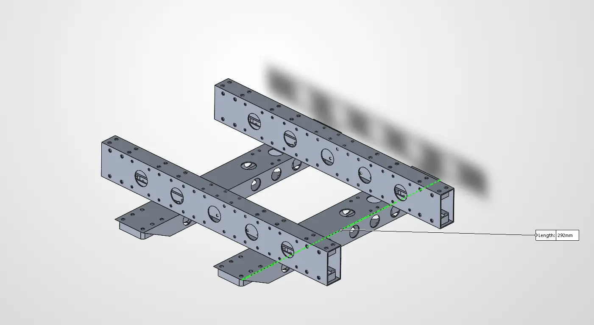
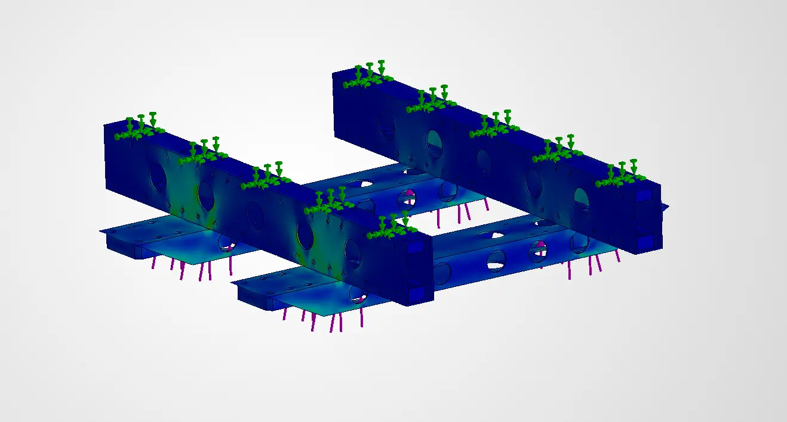
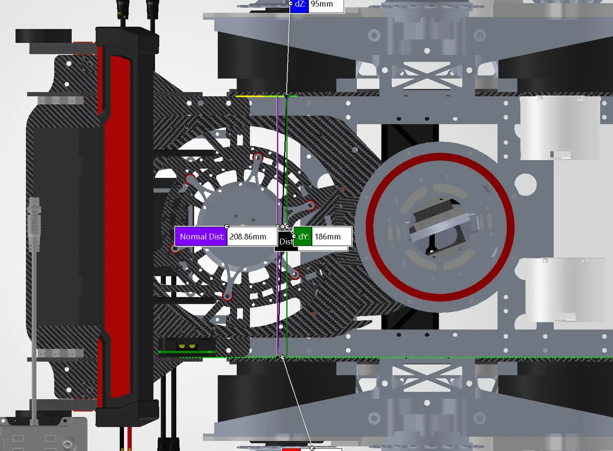
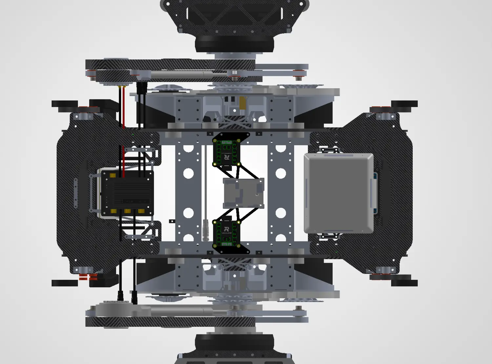
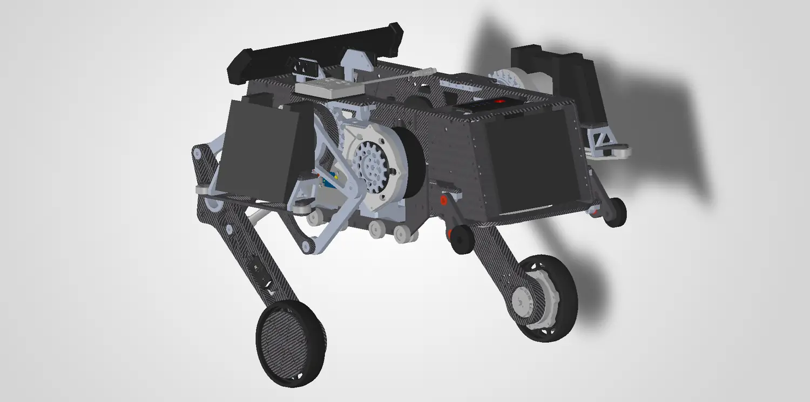
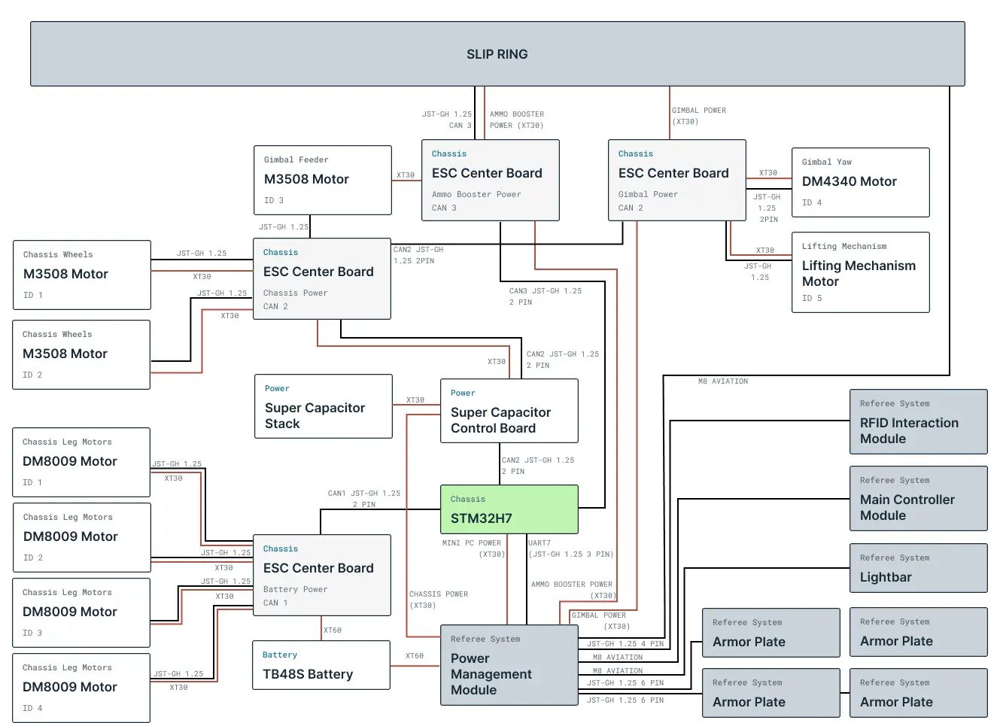

6. Semester 1 Work
Chassis Design
The Semester 1 contribution is the new Heavy chassis integration, not redesign of the pre-existing wheel-leg linkage. Reusing Calibur's serial-leg assemblies reduces cost and development time while allowing emphasis on frame loads, layout, electronics access and launcher interfaces.
Leg Analysis
CAD assessment of the existing linkage indicates a minimum height of 135 mm and maximum extended height of 405 mm.
The nominal vertical travel is 405 − 135 = 270 mm, exceeding the 200 mm step by 70 mm. This establishes geometric feasibility only; it does not prove dynamic step-climbing under the Heavy robot's full mass.
Table 8: Serial-Leg Height Range
Each leg assembly is 153.41 mm wide. Two assemblies leave a maximum central chassis width of 600 − 2(153.41) = 293.18 mm within the stowed width limit, before clearance and manufacturing tolerances.

Figure 9: Leg Assembly Width
Structural Design
The frame must transfer loads between the leg mounts, resist asymmetric landings and survive robot-to-robot impacts. The preliminary design uses a crossed 30 × 20 mm aluminium rectangular-tube structure with 1 mm walls. The preliminary estimated mass of the tube-frame concept is 530 g. The load-path-led structural design and simulation approach was informed by Jiaolong Team structural design practice [12].
STRUCTURAL CASE STUDY
Tube structure vs plate structure
For the same aluminium material, Young’s modulus E is constant. The cross-sectional second moment of area I therefore governs the relative elastic bending stiffness about the specified axis.
Comparison assumes the same material and bending axis. The two cross sections contain different amounts of material, so this is an idealised section-stiffness comparison—not evidence of 320× greater strength or equal-mass performance.
The crossed tube frame links the leg mounts while conserving central volume. Placing material farther from the bending axis improves flexural rigidity, but the comparison above is theoretical and does not replace load testing or finite-element validation of the assembled frame.

Figure 10: Preliminary Crossed-Tube Chassis Frame (Top View)

Figure 11: Preliminary Crossed-Tube Chassis Frame (Isometric View)
STRUCTURAL LOAD CASE
Analysis of landing forces
Estimate the average vertical reaction force when the robot lands after descending from high ground, using the work–energy principle.
Assumed landing conditions
Average landing reaction
This is an idealised average reaction, not the peak impact force. It assumes a vertical drop and an effective stopping distance of 0.10 m; actual loads depend on compliance, impact dynamics and load distribution.
Preliminary static FEA was run at 1,400 N (about 1.90× the estimated average landing reaction), slightly below the nominal 2× target of 1,472 N, at the leg-mount interfaces with specified fixed supports. The preliminary stress contour provides qualitative evidence only; maximum von Mises stress, displacement, mesh convergence and measured impact loads have not been documented; structural validation therefore remains incomplete.

Material Selection
Candidate materials for the outer protective structure were compared using the estimated mass and quoted cost for the same geometry. These are preliminary CAD estimates and prices, not purchased-part measurements.
| Candidate | Estimated mass | Quoted cost (SGD) |
|---|---|---|
| 304 stainless steel | 378 g | $117.18 |
| Aluminium 6061 | 127.81 g | $53.04 |
| Fibreglass | 117.39 g | $14.33 |
| Carbon fibre | 68 g | $18.77 |
Table 9: Outer-Structure Material Comparison
Carbon fibre offers the lowest estimated mass in this comparison, although manufacturability, mounting durability and impact performance still require verification. Material choice is therefore preliminary.
Ammunition Storage Envelope
A space claim of 186 × 120 × 111 mm provides 2,477,520 mm³ of nominal storage volume. Applying an assumed 0.64 packing fraction and 40,194 mm³ per projectile gives an idealized estimate of 39 rounds. This is not a validated discrete packing arrangement; the accessible feed-path volume, projectile diameter and loading method must be checked with a physical mock-up. A reliable 24-round capacity remains the design target.

Figure 12: Proposed Ammunition-Storage Space Claim
Electronics Integration and Maintainability
A firmware stakeholder requested that electronics be accessible from one side to simplify diagnostics. The current CAD layout therefore arranges serviceable electronics for bottom access, consistent with the three-minute turnaround objective. Cable routing, connector access, cooling and actual removal time have not yet been validated.

Figure 13: Bottom-Accessible Electronics Compartment
Preliminary Integrated CAD Prototype
The preliminary integrated CAD model combines the reused wheel-leg assemblies with the crossed chassis, side structures and proposed electronics/storage layout. This demonstrates mechanical packaging progress, but physical chassis fabrication and successful robot-level testing have not yet been documented and remain future work.

Figure 14: Semester 1 Preliminary Integrated CAD Design
Robot wireframe / 3D CAD viewer
Reserved for a rotatable wireframe of the complete ASI-408 Heavy robot. No geometry has been reconstructed from screenshots: the viewer will use the actual exported CAD model.
Preferred file: ASI-408-heavy-robot.glb (one complete assembly, reasonably simplified; ideally below 20 MB). Alternative: STEP (.step/.stp) for CAD conversion, or STL (.stl) for geometry only. If exporting a SolidWorks native assembly, include the .SLDASM plus all referenced .SLDPRT files.
Electrical Architecture

7. Future Work
The immediate priority is to freeze the attachment interface, then fabricate and test the chassis and launcher systems before the 4 January 2027 video assessment. Planned validation includes: (i) full-mass 200 mm step trials and recovery after a fall; (ii) timed acquisition and attachment from the 400 mm workstation against the 60 s design goal; (iii) passive power-off retention and repeated docking trials; (iv) projectile-feed demonstrations targeting 24 rounds; (v) physical impact/deflection measurement and corroborated FEA; and (vi) a timed electronics or component replacement exercise. Failures will guide successive design iterations, followed by RMUL competition review.
8. Project Timeline
The project plan below summarises the intended schedule of work. The bars show planned work periods, rather than verified completion or exact start dates.
This is the proposed engineering schedule. Later official competition dates or changes in fabrication/testing progress supersede these indicative milestones.